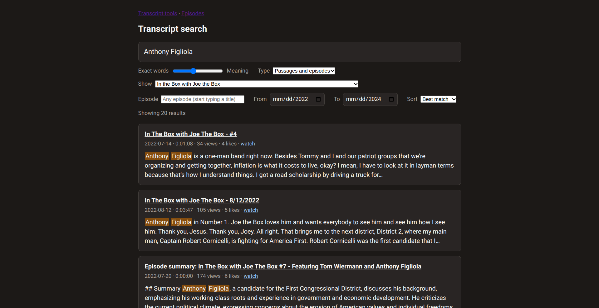
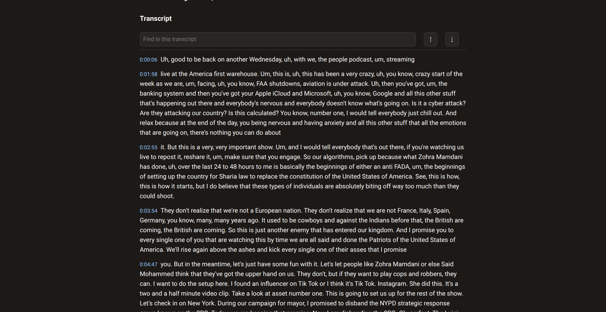

Jake Klingensmith is a computational investigative journalist. He uses computer vision and machine learning to build investigative tools to help journalists handle the evergrowing sea of data on the internet.
An archival document management platform: a Django app for ingesting scanned documents, running OCR and NER pipelines, and annotating pages with tagged regions. Try the viewer demo · Source on GitHub.
A search tool over transcripts of the America First Warehouse's shows, blending exact-word and semantic matching, with filters by show, episode and date.

